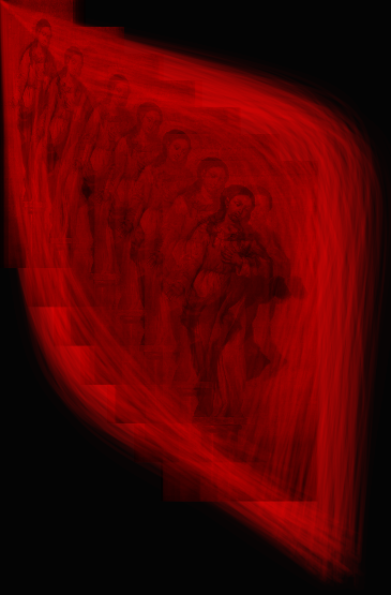
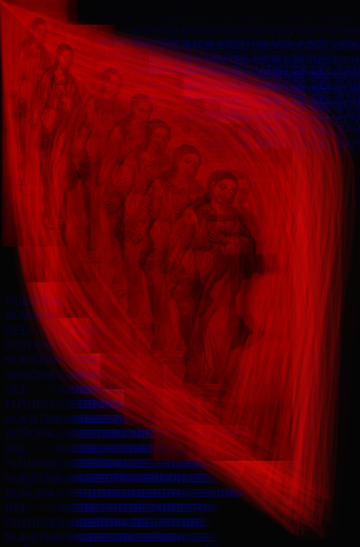

Futura I
Futura II
Futura III

Desarrollo Conceptual:
Los siguientes son una serie de ejercicios que buscan explorar y recuperar ciertas nociones sobre el uso arcaico de las imágenes. En las principales civilizaciones hidráulicas del Nilo y la Mesopotamia o de la América Precolombina, la imagen tenía una función, por sobretodo, cultual y mágica. Los frescos, relieves y estatuas, no eran imágenes dispuestas para su apreciación estética, sino que eran objetos que poseían un poder mágico y sagrado imprescindible para estas sociedades. Sumado a lo anterior, estos objetos no eran considerados simples representaciones o formas de la mimesis, sino que en la mayoría de los casos, se los entendía como una encarnación de la divinidad o habitados por ella temporal o permanentemente, símbolos de la presencia terrible de lo divino. Estas nociones configuraban un esquema estético en dónde el tamaño, el color, las formas y técnicas que conformaban a estos objetos mágico-religiosos tenían efectos directos sobre la realidad de estas sociedades.
Inspiradas en lecturas de William Burroughs, Sadie Plant y diversos textos del CCRU, las Futuras consisten en un primer paso en el modo hipersticional, la invocación y el tratamiento sacro de la imagen. Pueden ser interpretadas como incipientes visiones, primeras apariciones del concepto de futuro en la podredumbre del ciberpunk contemporáneo. Las Futuras son producto del détournement de diversas imágenes sacras provenientes del cristianismo y, como tales, son un intento de exhumar la verdad radical que en ellas reside constantemente ocultada: el advenimiento de una revolución que destruye todos los ordenes y jerarquías de este mundo. Como bocetos, todavía distan mucho de encarnar aquellos ideales, pero aún así son valiosas, en tanto, registro del desarrollo de una nueva mitología disidente en expansión.